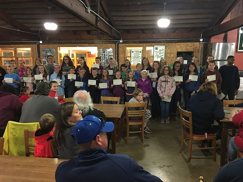

|  | In the sixties, the oldest 4-H Club in Champaign County was founded and named the Sadorus Plow kids. The club did different community service activities and helped out their environment. The second club was led by Loreta Stoeger and called the Sadorus Handi-Kids. The club began to grow in numbers under her leadership. Currently, our club is the Sadorus 4-H All-Stars. Although the name has changed throughout the years, the members still hold the club's original values close to their heart. One of our current leaders, Lori Gregg, became a leader in 2004 when Stoeger retired from almost 30 years of serving the club. With the help of other leaders, they greatly increased the engagement and number of members. The leaders help teach members about challenging themselves, working hard, and putting others in front of their own needs. Our club strives to make an impact in our community, learn from each other, and better ourselves through hard work and determination. We want to make a difference on the lives of others as well and encourage everyone to join a club and challenge themselves everyday. |